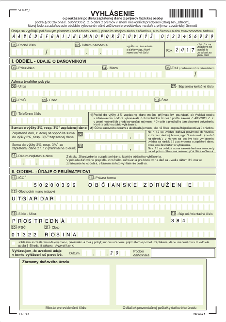

Na to, aby sme históriu sprístupnili ľuďom, potrebujeme vašu pomoc. Preto, ak ste zamestnanec, fyzická alebo právnická osoba, venujte nám 2% z vašich zaplatených daní. Podporíte tak naše aktivity. Ďakujeme pekne!
Sme občianske združenie UTGARDAR, ktoré združuje priaznivcov historického šermu a oživenej histórie, obdobia včasného stredoveku, v oblasti Škandinávie a Ruska. Našimi činnosťami a cieľmi sú:
Návod pre zamestnancov: TU
Návod pre fyzické osoby: TU
Návod pre právnické osoby: TU
Tlačivo na darovanie 2% z dane z príjmu:

Obchodné meno: UTGARDAR
Právna forma: Občianske združenie
IČO: 50200399
Adresa: Prostredná 384
PSČ: 013 22
Obec: Rosina
Informácie o poberateľovi na stránkach Notárskej komory SR: TU